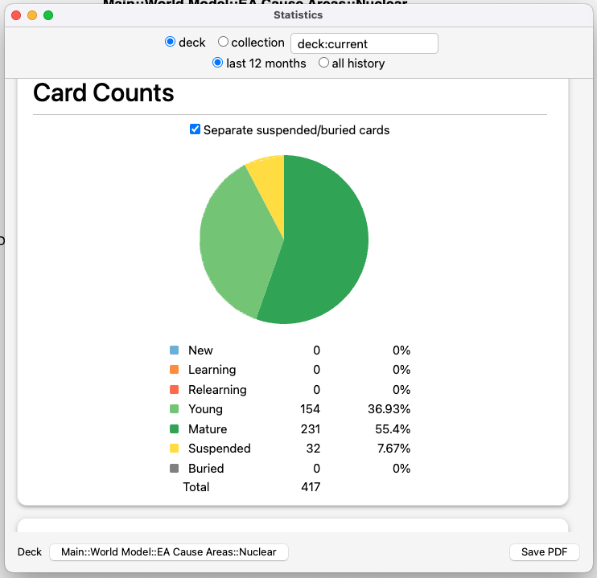

If I could show my total hours here it'd be a bunch! I've been working on job applications and pitches since late Feb of 2025.
This currently looks like:
Cumulative hours spent: Loading...
I want to publish more blog posts! I often find that I get new insights from writing, which is super cool. Also there's the sense of increasing your legibility, sharing what you're working on, etc.
Cumulative hours: Loading...
I've solved the "I love writing and find that writing in public is way more effective than writing in my Obsidian vault or whatever" issue!!! The trick is to have a "silent" blog on this site, which, unlike Substack, doesn't email people when I hit publish. Feels like the perfect Middle Way.
Cumulative hours: Loading...
Sadly I didn't make a nuclear beeminder when I did my ~12 hours of study in 3 days but look, I've got >400 flashcards and could wax poetic about NPT vs CTBT vs TPNW, the failures of the NPT, what the IAEA does re: article III of the NPT, how article VI is kind of a scam hence the TPNW, how philanthropic funding has ~halved, etc. Seriously let me ramble at you give me a call wait where are you going come back
Last updated: